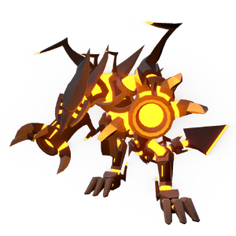

Corus
背景

通过 Proto Colony 与 Omen 的联合研究和创新，FOX 已接近找到一种值得称道的方式，来复现 Onyx Pilot 的再生躯体。他们的进展最终落在自给自足的纳米机器上。这些纳米机器以金属为食，并组成具有复制能力的有感知构造体。一批实验纳米机器人被放入密封容器，作为受控环境用于监测纳米机器活动，该容器被称为 Mechanical Biosphere System。许多 Gaian 日之后，人们注意到收容体的温度缓慢但持续上升。一台监测探针被降入箱内，里面有一个完全形成的构造体似乎正在休眠，并释放极端高温和可燃气体。这个构造体很快被命名为 Corus。
经过进一步研究和改良后，一种新的纳米机器株系很快被创造出来，并被投放到后来被命名为 MBS-02，Mechanical Biosphere System 02 的星球上。最初的收容体最终也被丢到那颗星球上，但那时它只被视为一种处理废物的方式。
随着有关该构造体的知识从 Proto Colony 研究团队传出，它通过传闻逐渐变成一个小众传说。
“一个由恒星本身塑造的存在，被封印在金属之山下。”
策略
Corus 的战斗由两个阶段组成。第一阶段中，他每次攻击都会在战场各处释放持续火球弹幕。他也可以高高跃起，向下投掷更大的火球，留下持续伤害对手的地面火池。
死亡后，他会被蓝色火焰吞没并进入第二阶段。在该阶段，他发射的大多数火球都会额外留下覆盖战场地面的火池。此外，他的跳跃攻击会留下持续存在并随时间增长的火柱。配合火池，Corus 会让战场大部分区域难以通行，使玩家在他接近时几乎没有空间躲避连番攻击。
统计
基础 HP：12000
伤害：火焰
| 属性 | 抗性 |
|---|---|
| 物理 | 中性 (1x) |
| 火焰 | 抗性 (0.5x) |
| 冰霜 | 弱点 (1.5x) |
| 电击 | 中性 (1x) |
| 光耀 | 抗性 (0.75x) |
| 暗影 | 弱点 (1.25x) |
| 毒 | 中性 (1x) |